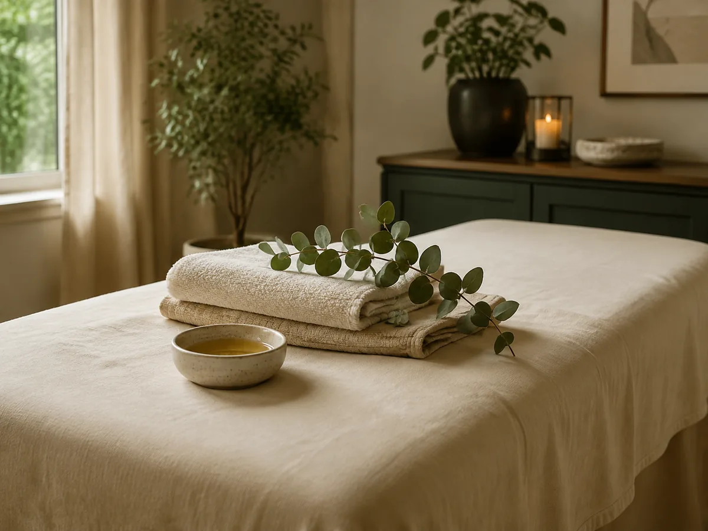
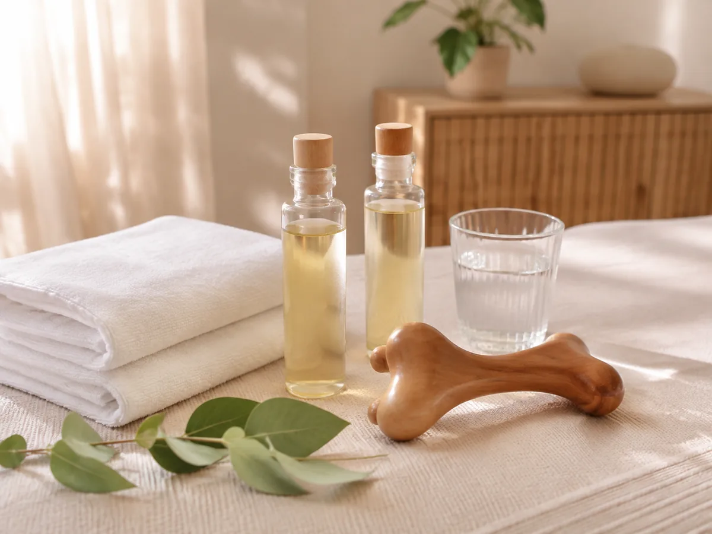
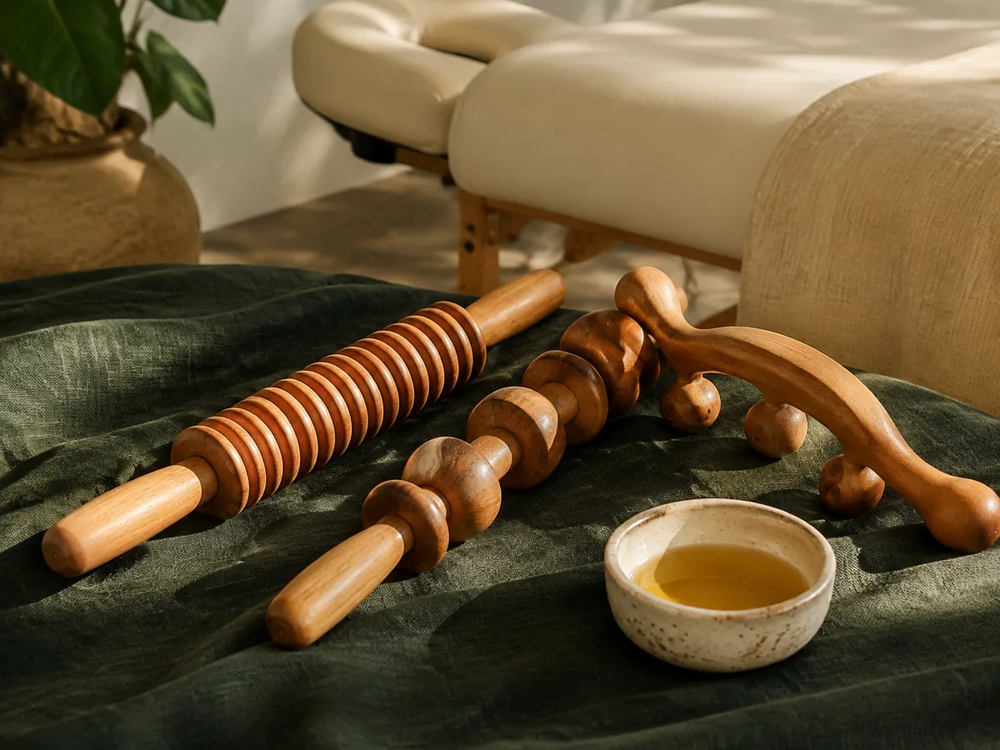
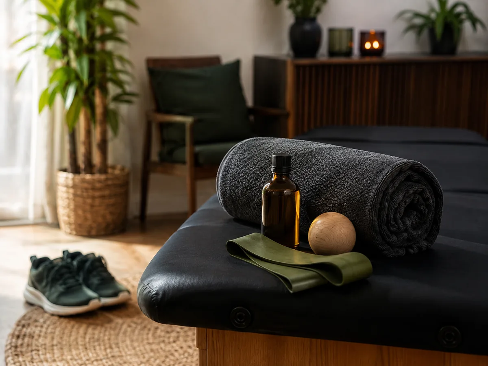
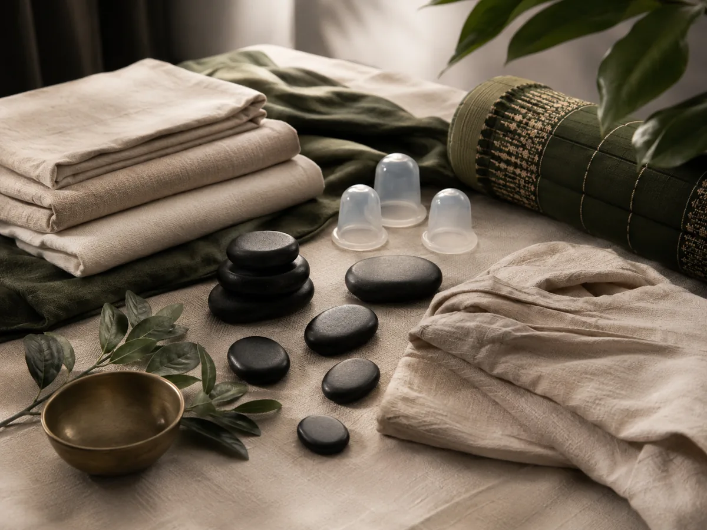
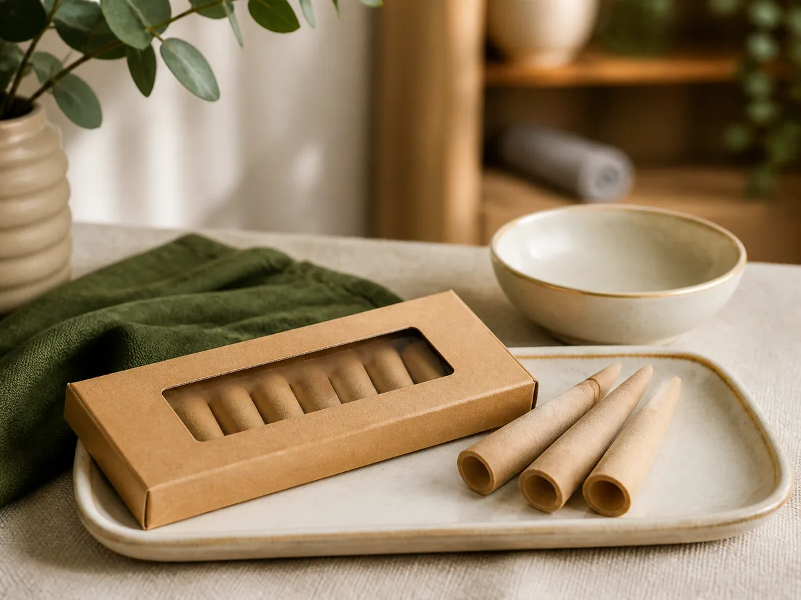
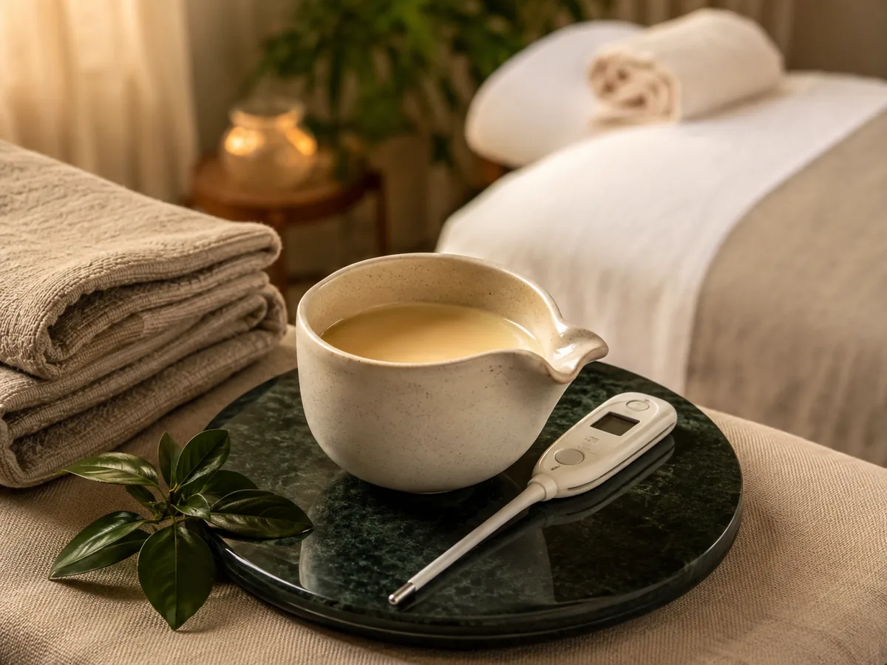
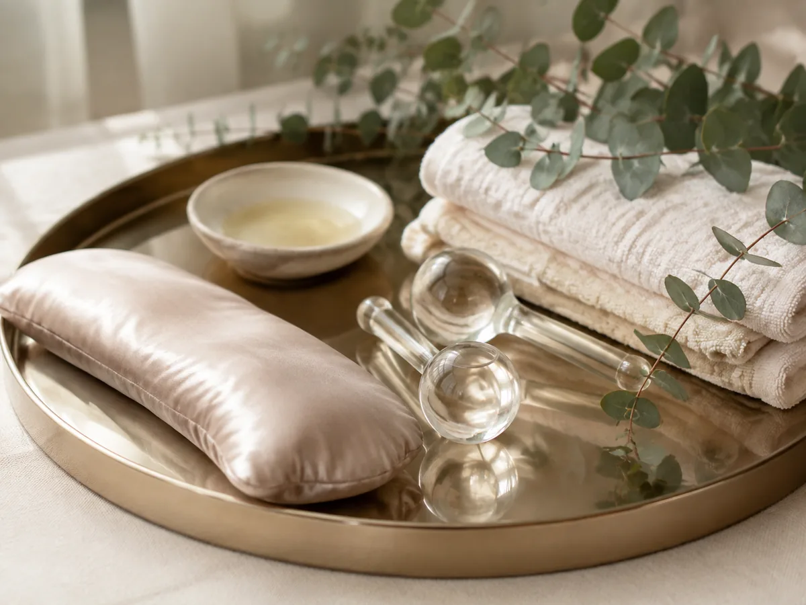

Relaxamento
Massagem Relaxante
Movimentos suaves e contínuos para favorecer o descanso e aliviar as tensões acumuladas pela rotina.
Atendimento domiciliar personalizado
Melissa Yumi Okuno
Massagens e terapias de bem-estar com atendimento domiciliar personalizado, proporcionando mais conforto e tranquilidade para sua rotina.
Um momento para cuidar de você
Em meio à rotina, reservar um momento para desacelerar também é uma forma de cuidado. Cada atendimento é realizado de maneira personalizada, respeitando suas necessidades e proporcionando uma experiência dedicada ao relaxamento, conforto e bem-estar.
E o melhor: o atendimento acontece no conforto da sua casa.
Quero agendar meu atendimentoProcedimentos
Conheça técnicas pensadas para diferentes necessidades de relaxamento, cuidado corporal e bem-estar.

Relaxamento
Movimentos suaves e contínuos para favorecer o descanso e aliviar as tensões acumuladas pela rotina.

Leveza
Movimentos suaves, lentos e rítmicos que podem auxiliar na sensação de leveza e na redução da sensação de inchaço.

Cuidado corporal
Movimentos mais firmes e estratégicos que complementam os cuidados estéticos e estimulam os tecidos.

Recuperação
Cuidado direcionado às regiões mais exigidas em treinos, pensado para pessoas fisicamente ativas.


Prática complementar
Uma prática complementar realizada em ambiente tranquilo e controlado, voltada à experiência de relaxamento e conforto.

Candle Massage
Uma experiência sensorial que combina massagem, aroma, óleo aquecido e uma temperatura agradável.
Seu tempo, seu cuidado
Escolha o atendimento que mais combina com você e entre em contato para verificar os horários disponíveis.
Conheça
Meu propósito é proporcionar momentos de cuidado e bem-estar através de atendimentos personalizados, respeitando as necessidades e particularidades de cada pessoa.
Cada sessão é preparada com atenção aos detalhes para que o atendimento seja confortável, acolhedor e realizado com responsabilidade.
“Um atendimento pensado para que você se sinta à vontade do início ao fim.”Falar com Melissa
O cuidado vai até você
Desfrute de um momento de cuidado sem precisar enfrentar trânsito, deslocamentos ou salas de espera. O atendimento é realizado no conforto da sua casa, proporcionando mais privacidade, praticidade e tranquilidade.
Atendimento no ambiente onde você se sente mais à vontade.
Sem necessidade de deslocamento antes ou depois da sessão.
Cada sessão é preparada considerando as necessidades apresentadas pelo cliente.
Atendimento de segunda a sexta, das 08:30 às 20:30, e aos sábados, das 09:00 às 18:00.
Cuidado complementar
Técnicas suaves aplicadas em regiões como face, têmporas e pontos específicos da cabeça podem proporcionar uma agradável sensação de relaxamento, especialmente após períodos de estresse e tensão.
Uma experiência complementar voltada ao relaxamento e ao conforto da região facial.
O atendimento tem finalidade de bem-estar e não representa tratamento para condições de saúde.
Consultar horários
Como funciona
Conheça as técnicas disponíveis e escolha aquela que mais combina com seu momento.
Clique no botão de WhatsApp e solicite um horário.
Combine endereço, disponibilidade e os detalhes necessários para o atendimento.
No horário combinado, Melissa realiza o atendimento no endereço informado.
Horário de atendimento
Atendimento exclusivamente mediante agendamento.
Consultar horáriosPerguntas frequentes
Se ainda tiver alguma dúvida, Melissa poderá orientar você pelo WhatsApp.
Quero tirar uma dúvidaDepois de escolher uma técnica, você combina o endereço, o horário e os detalhes pelo WhatsApp. No dia agendado, Melissa leva os itens necessários para realizar o atendimento em sua casa.
O atendimento acontece de segunda a sexta, das 08:30 às 20:30, e aos sábados, das 09:00 às 18:00, sempre mediante agendamento.
Clique em qualquer botão de WhatsApp do site e envie a mensagem preparada. Informe o procedimento de interesse e aguarde a confirmação dos horários disponíveis.
Reserve um espaço tranquilo e com circulação suficiente para o atendimento. Detalhes sobre roupas, alimentação e materiais podem ser combinados previamente pelo WhatsApp.
Conte o que você busca e como está se sentindo. Melissa poderá explicar as características das técnicas disponíveis para ajudar você a fazer uma escolha consciente.
As formas de pagamento devem ser confirmadas diretamente com Melissa no momento do agendamento.
Algumas condições de saúde podem exigir cuidados específicos ou contraindicar determinadas técnicas. Informe previamente condições médicas, gravidez, cirurgias recentes, lesões, alergias ou uso de medicamentos relevantes. Quando necessário, procure orientação do profissional de saúde responsável.
Procedimentos pós-operatórios devem ser realizados somente quando houver indicação e liberação do profissional de saúde responsável.
Entre em contato
Entre em contato pelo WhatsApp para conhecer os horários disponíveis e encontrar o atendimento mais adequado para você.